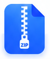

slice/brand-titlebaroriginal-pixel-crop

slice/brand-extractoriginal-pixel-cropslice/folderoriginal-pixel-crop
slice/file-pdforiginal-pixel-crop
slice/file-textoriginal-pixel-crop
slice/file-codeoriginal-pixel-crop
slice/file-markdownoriginal-pixel-crop
slice/photo-lake-previeworiginal-pixel-crop
slice/photo-lake-thumbnailoriginal-pixel-crop
slice/photo-sunrise-thumbnailoriginal-pixel-crop
slice/openoriginal-pixel-crop
slice/neworiginal-pixel-crop
slice/archive-testoriginal-pixel-crop
slice/moreoriginal-pixel-crop
 slice/searchoriginal-pixel-crop
slice/searchoriginal-pixel-crop slice/settingsoriginal-pixel-crop
slice/settingsoriginal-pixel-crop slice/view-listoriginal-pixel-crop
slice/view-listoriginal-pixel-cropslice/view-gridoriginal-pixel-crop
slice/sortoriginal-pixel-crop
 slice/closeoriginal-pixel-crop
slice/closeoriginal-pixel-cropslice/check-selectedoriginal-pixel-crop
slice/successoriginal-pixel-crop
slice/radio-selectedoriginal-pixel-crop
slice/radio-unselectedoriginal-pixel-crop
light/openvector-reconstruction
 light/newvector-reconstruction
light/newvector-reconstructionlight/archive-testvector-reconstruction
 light/searchvector-reconstruction
light/searchvector-reconstructionlight/closevector-reconstruction
light/chevron-rightvector-reconstruction
light/chevron-upvector-reconstruction
 light/checkvector-reconstruction
light/checkvector-reconstructionlight/arrow-rightvector-reconstruction
light/extractvector-reconstruction
light/view-listvector-reconstruction
light/view-gridvector-reconstruction
light/sortvector-reconstruction
 light/sort-ascendingvector-reconstruction
light/sort-ascendingvector-reconstruction light/completedvector-reconstruction
light/completedvector-reconstructionlight/external-openvector-reconstruction
light/minimizevector-reconstruction
 light/maximizevector-reconstruction
light/maximizevector-reconstructionlight/settingsvector-reconstruction
light/foldervector-reconstruction
light/archivevector-reconstruction
light/file-textvector-reconstruction
light/file-codevector-reconstruction
light/file-markdownvector-reconstruction
light/file-pdfvector-reconstruction
light/morevector-reconstruction
light/app-markvector-reconstruction